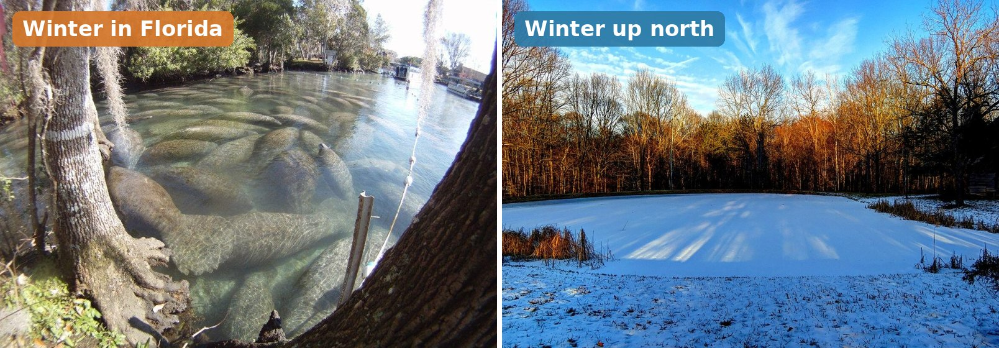

Keep this question in mind. By the end, you'll build a model that compares Florida's seasons to another region's, and shows how plants, animals and food energy stay connected.
It's January. In Florida, what's happening outside? Now picture the same month in Maine. Where would you see each photo? Sort them in the game below.
Plants and animals depend on each other AND on the seasons. Today you'll build a model that compares the two — Florida and one other region — to show those connections.
Tap a card to flip it and read what the word means.
Part 1 · Florida's Seasons Look Different
In January, Maine has snow on the ground, bare trees and very few animals out in the open. Florida in January has green grass, songbirds and lizards on fences. Same month, totally different scene.
That's because Florida's seasonal changeSeasonal changeHow temperature, daylight, and weather shift across the year. is mild. Our winters are mild and our summers are hot and rainy. Other regionsRegionA large area with its own climate, plants, and animals. have winters cold enough to freeze water and bury the ground in snow.
Part 2 · How Plants and Animals Depend on Each Other
Plants and animals are connected by interdependenceInterdependenceWhen living things need each other.: they need each other. Plants need pollinators to make seeds. Birds need insects to feed their babies. Every animal, including you, gets its energy from food.
- Florida's mild winter: Plants keep growing and many animals stay active. Birds migrateMigrationAnimals traveling between regions across seasons. here from the north to find food.
- Maine's cold winter: Many trees drop their leaves. Some animals hibernateHibernationA sleep-like state to save energy when food is scarce., like bears. Others, like robins, fly south.
When animals eat plants, the food energyFood energyThe energy stored in food, passed when something gets eaten. the plant stored passes to them. When winter stops the plants, animals must find food another way, or move where food is still growing.
Watch out: Some people think Florida doesn't have seasons. It does! They're just milder. Days are shorter in winter and longer in summer here too, and plants flower at different times of year.

🌦️ Weather vs. Climate — What's the Difference?
Weather is what's happening outside right now. Climate is the usual weather in a place over many years. Seasons happen because Earth is tilted as it travels around the Sun, so each place gets more sunlight in summer and less in winter.
Part 3 · The Manatee Water Test
Every winter, Florida manatees face a test: cold water. Scientists test one thing at a time. Change only the river's temperature and see where the manatees go.
Part 4 · Build a Seasonal Model
Scientists build models to show connections. Build a model of January in two regions, Florida and Maine. Put a plant, an animal and the weather in each circle. Then show how food energy and migration connect them.
Florida's winter is much milder than Maine's. Which is the BEST evidence-based reason ducks migrate from Maine to Florida every winter?
A Maine bear sleeps through winter to save energy. A Florida bear doesn't. Why?
A robin in your Florida yard eats a worm. The worm got energy from soil and plants. Where did the energy start?
🌿 Part B — Short Answer
Answer in complete sentences. Use vocabulary words from today's lesson.
🗺️ Part C — A Two-Region Seasonal Model
Pick a season and one region besides Florida (like Maine or Colorado). Describe both places in that season, one food-energy connection in each, and how the regions are connected.
A classmate says, "Florida doesn't really have seasons. It's just summer all year."
Do you agree or disagree? Prove it with two pieces of evidence from today's lesson.
Nicely done. You can now compare Florida to other regionsRegionA large area with its own climate. across the seasons and explain how living things depend on each other for food energy. Next lesson: the rocks, water, sunlight and wind that people use as resources.